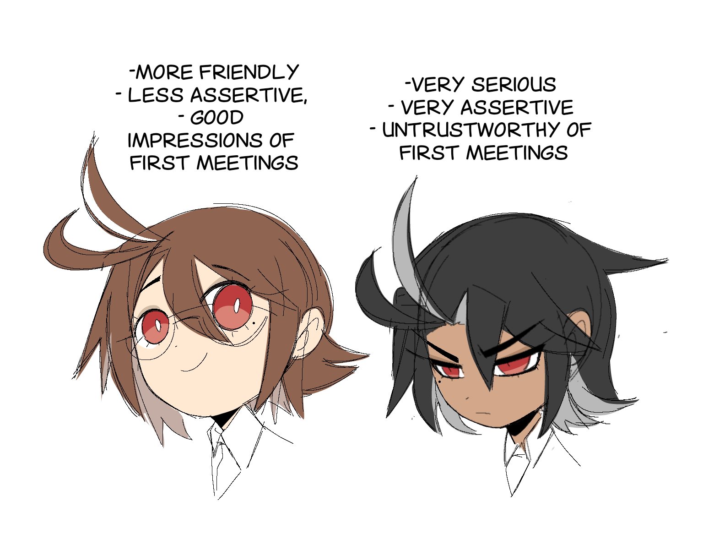
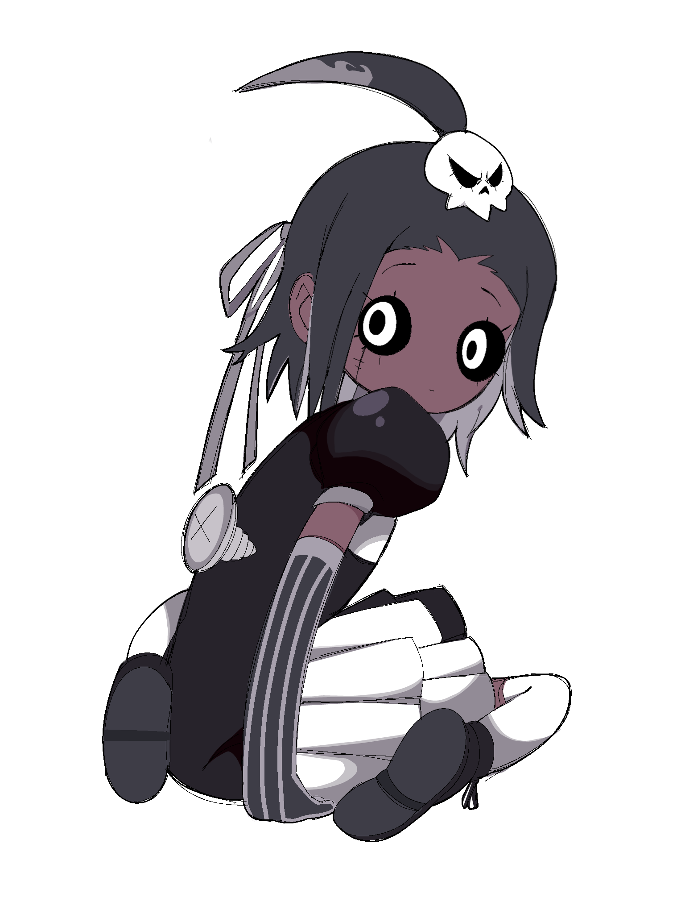
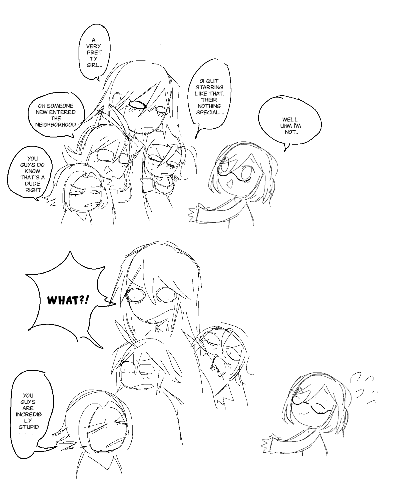
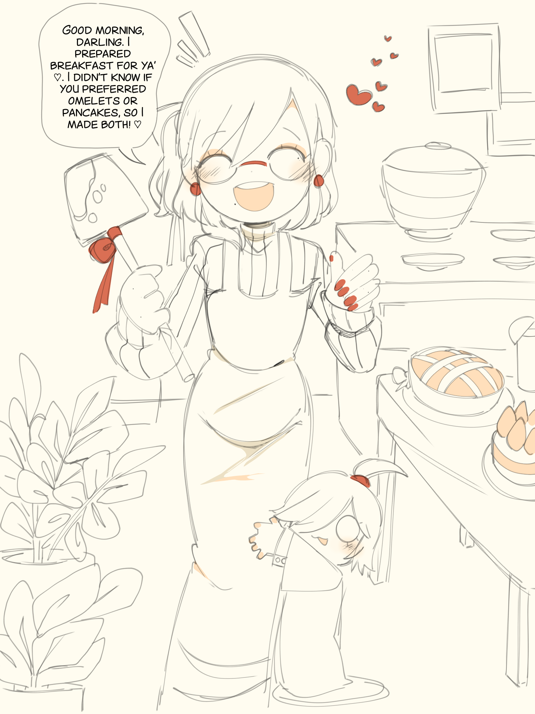
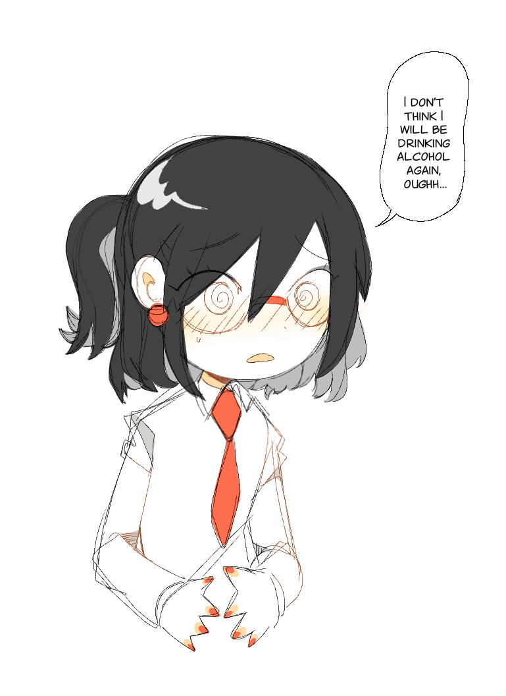
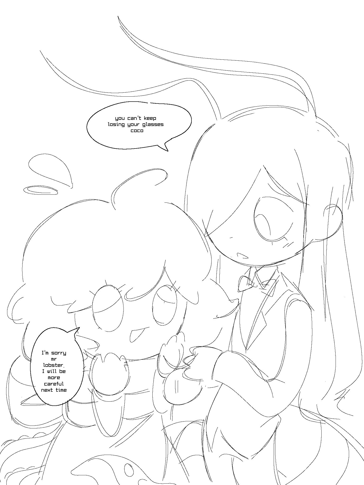

6#
6# 

-
Log Desc
The white brothers (both of them have insane unresolved issues that try to act like normal people)
While vincent (pechis uncle) tries to act more friendly compared to his brother , renald (pechis actual father) seems to be more assertive and and serious
Vincent often teases him , which he frequently feels annoyed by
5#

-
Log Desc
Sophie is made out of parts from stuffed animals, she refers to melphis as (docter)
she does often get annoyed with him
4#





-
Log Desc
The character? thats phil (phillian kaminski), a man that arrived new in town (yes a man) he often has a femminine appearance and gets mistaken for a woman allot. tho he doesnt mind that allot.
Other than that he has a son that is twice his size who he ofc dearly loves and is very friendly. phil is not very confident and gets shy flustered quickly but his behaviour akin to a housewife
4#

Watching hours of dancing fruits
2#

-
Log Desc
Coco cant remember anyones name, even if she tries hard to do so..
she adresses people with mr, ma am, miss (their species) so she wont have to keep track other than
that she loses her glasses frequently and sees bad without em
1#
-
NOTE!
Rule set
Clearing up information!- Most of deathenize characters are Non binary and pan/bisexual
- A character with not any confirmed gender, assume their enby
- Character with no confirmation about sexuality, assume their either Pan or Bi
- Visual makeup does not mean that the character is male or female, tho femmenine
or masculine
traits can be applied, or something in between
- Permission was aksed for a wiki, i gave my go with the promise of it being extremely close to canon,
but still 1
- Im not associated with the wiki, while i will try to check that theres factual information, im not
always there to observe, therefore always adhere to the website for canon information
- Character that are confirmed bisexual, if not confirmed what gender they prefer, assume their 50 50
with no preferences. im okay with gay being used for an umbrella term for my characters, but i wish not
for bisexual characters to be called homosexual or lesbian, unless their ofc homosexual or lesbian and not
bisexual
- A character that is confirmed aroace or ace, still can have close platonic relationships